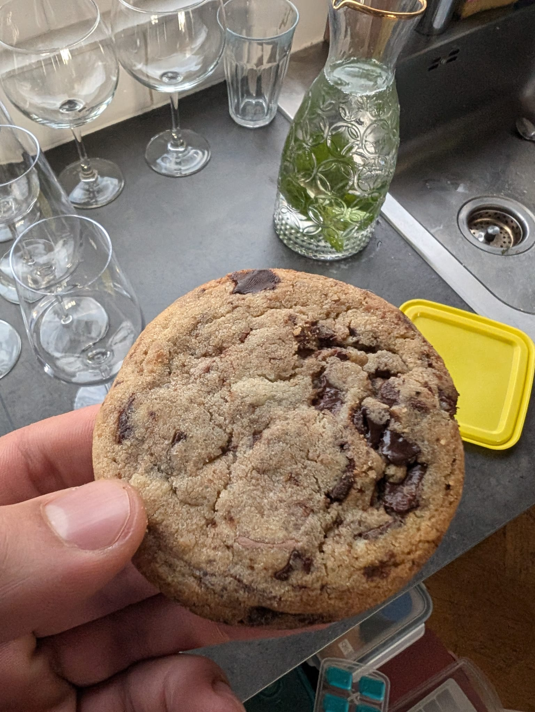

Chocolate Chip Cookies

Description
I made these chocolate chip cookies for the birthday of my roommate, and everyone loved them!
Ingredients
- 2 1/4 cups all-purpose flour
- 1 cup cold, cubed butter
- 3/4 cup granulated sugar
- 3/4 cup light brown sugar
- 2 large eggs
- 1 extra egg yolk
- 1 tsp baking soda
- 1 tbsp cornstarch
- 1 tbsp vanilla extract
- 1/2 tsp salt
- 2 cups mixed chocolate chips (semi-sweet and bittersweet)
Steps
- Preheat the oven to 375°F (190°C). In the bowl of a stand mixer, add the cold, cubed butter, granulated sugar, and light brown sugar.
- Begin mixing on low speed, gradually increasing speed. Continue creaming the butter and sugars together for 4 to 5 minutes until smooth. Scrape down the sides of the bowl.
- Add the eggs and egg yolk, one at a time, mixing well after each addition. Scrape down the sides of the bowl and add vanilla extract.
- In a separate bowl, whisk together the flour, baking soda, cornstarch, and salt. Gradually add the dry ingredients to the wet ingredients in the mixer. Mix on low speed until just combined.
- Add the chocolate chips and mix briefly until evenly distributed. Do not overmix.
- Place dough balls onto a baking sheet and bake for 6 minutes. Lift the baking sheet and drop it back onto the oven rack to help the cookies spread.
- Bake for an additional 2 to 3 minutes, being careful not to overbake. The cookies should be golden on the edges and soft in the center.
- Remove from the oven and cool on the baking sheet for 5 minutes before transferring to a wire rack. Sprinkle with flakey sea salt if desired.